Designing Ideas,
Capturing Moments
Merancang konten yang efektif untuk menjangkau audiens dan membangun kepercayaan terhadap brand.
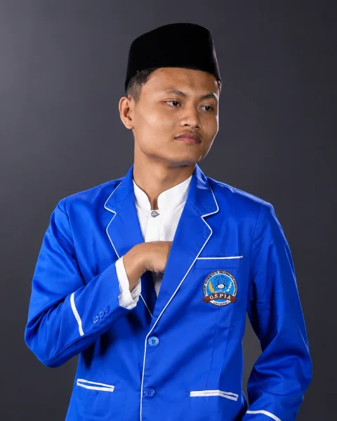
Salam Kenal!
Iqbal Maulana Alfiqi
Seorang pemuda yang memiliki ketertarikan dalam dunia teknologi dan industri kreatif, Juga seorang santri dari MA Ibnu Abbas As Salafy yang berlandaskan pemahaman Ahlussunnah. Di samping menjalani pendidikan, kami belajar bagaimana membuat konten yang efektif di media sosial sebagai langkah untuk mengembangkan diri menjadi kreator konten profesional. Kami juga terus mengasah keterampilan dalam berbagai software kreatif profesional.
Pengalaman & Organisasi
- - Desainer dan Pengelola Website Organisasi Majalah Santri
- - Koordinator Divisi IT Perpustakaan Ibnu Abbas As Salafy
- - Wakil Divisi Media Organisasi Santri Pondok Pesantren Ibnu Abbas
- - Peserta Kelas Desain Grafis Menggunakan CorelDRAW
- - Peserta Kelas Pemrograman Website
Creative Tools

Affinity by Canva

CorelDRAW

Adobe Lightroom

Snapseed

DaVinci Resolve
Web Development
HTML
CSS
AI & Workflow


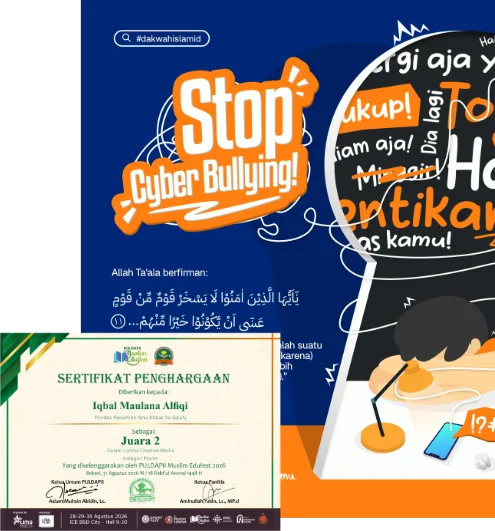
Second Place Winner in the Digital Poster Design Competition at PULDAPII Muslim Edufest 2026
Meraih Juara II dalam kategori Desain Poster Digital pada ajang PULDAPII Muslim Edufest 2026 yang diselenggarakan di ICE BSD City, Tangerang.
Logo Designer
Merancang logo resmi milik Perpustakaan Ibnu Abbas As Salafy pada usia 17 tahun. Karya tersebut terpilih untuk merepresentasikan identitas visual perpustakaan.
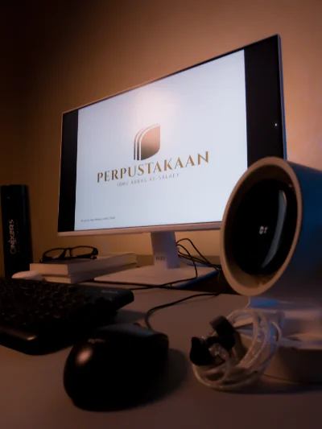
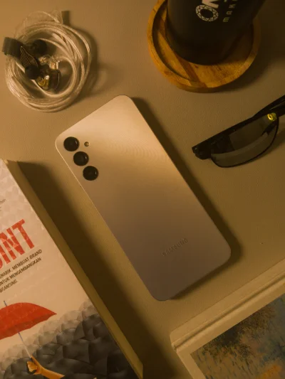
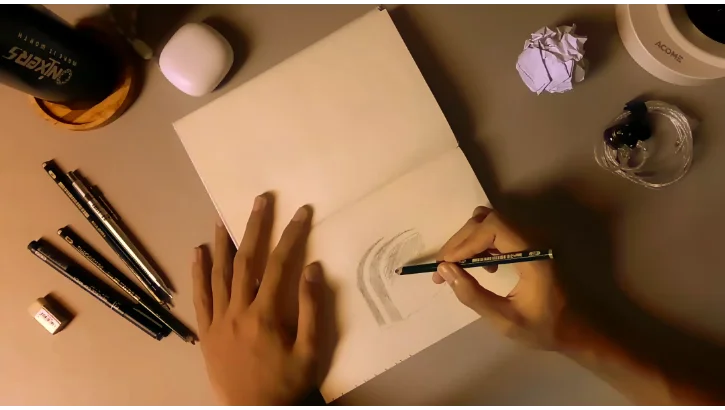
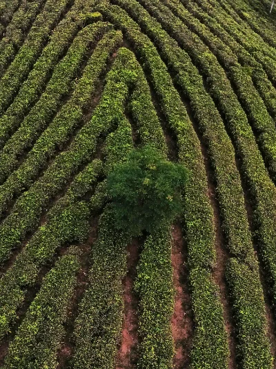
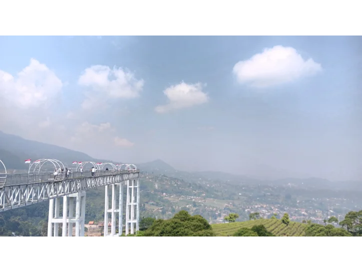
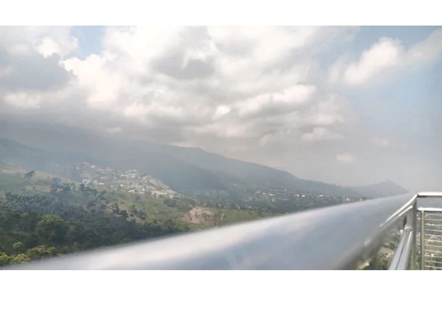
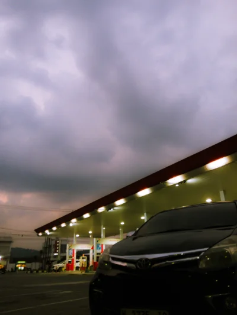
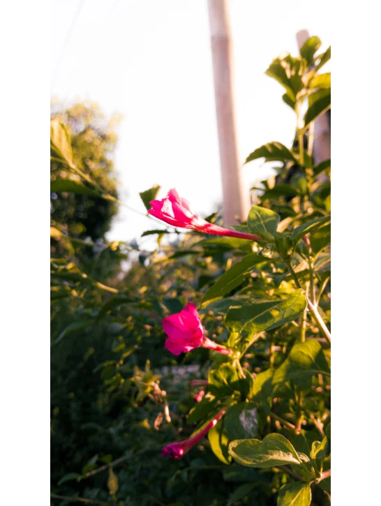
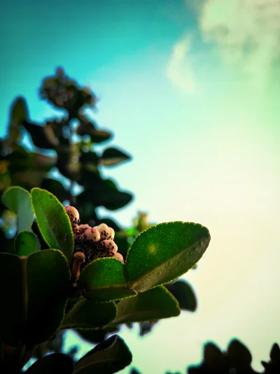
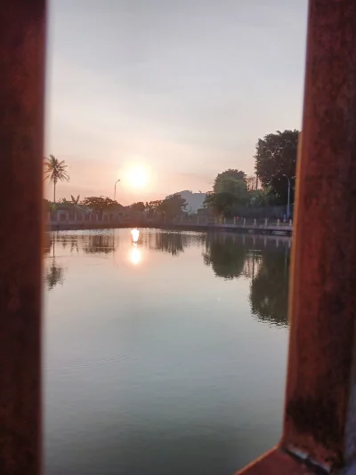
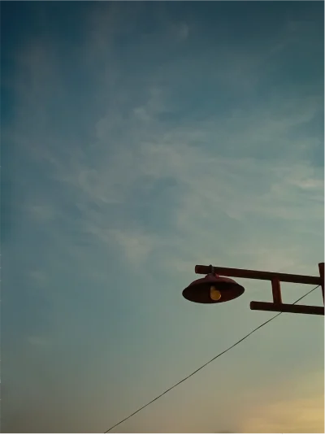
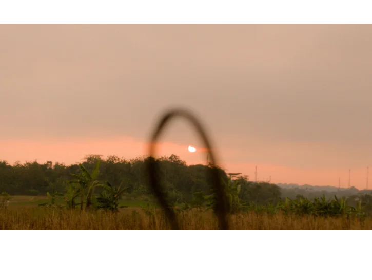
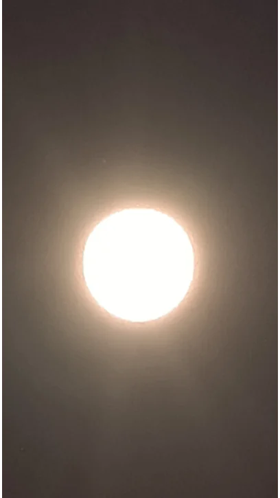